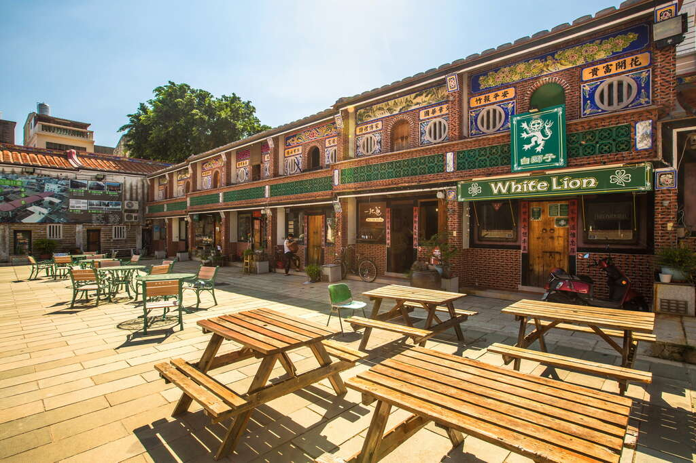
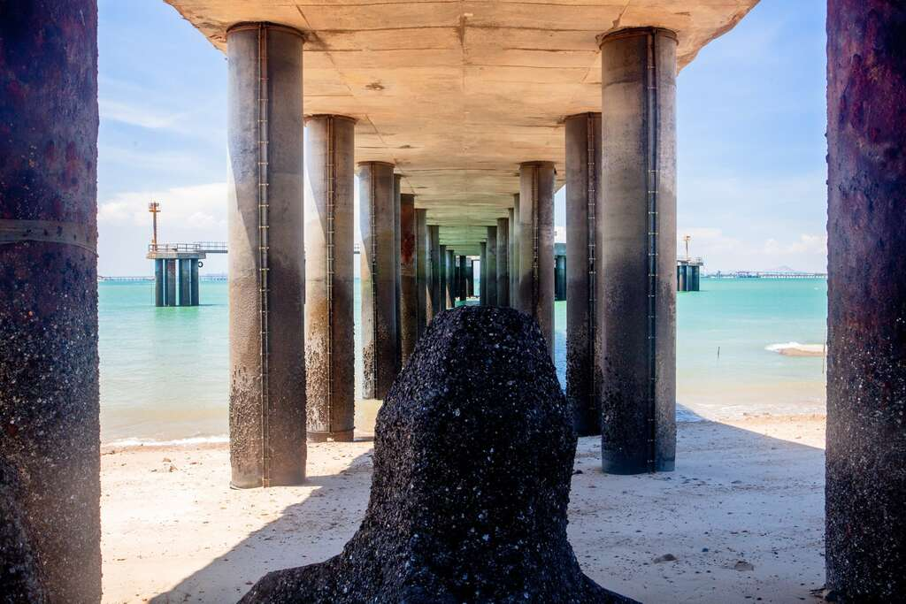

「得月樓」建於民國20年（1931年），由早期出洋落番印尼打拼的僑商黃輝煌肇建，並同時興建「黃輝煌洋樓」一幢，且在與「得月樓」之間，建造樓旁三開間、三凹壽中西合璧屋身淺短的「番仔厝」是假屋，以作為欺敵防禦之用，面外壁均設有鑄鐵材質的槍架，並有瞻孔作為瞭望之用，屋頂女兒牆並築有火槍射擊之垛口，是一堅固的防禦性衛塔，仔細看雕堡外牆精美的雕飾與優雅的線條，極具美感。?
「得月樓」樓高11.26公尺，牆厚40公分，內部含地下層共分為四層，主結構為鋼筋混凝土加強磚造，樓板為木樑結構，樓間狹小，上下以木梯輔助，而地下通道連接洋樓，可作為彈藥、物資補給、逃難的緊急通道一度曾為金門最高的建築物，或許因為古詩中：「近水樓臺先得月，向陽花木易為春」得月樓曾是金門離月亮最近的點所以才稱為得月樓。
得月樓完工後成為水頭聚落預警、料敵、制敵的公共防禦中重要的據點，也是目前水頭聚落最具特色的地標建築，雖為防禦之用，碉堡建築上的線條也極具美感，在2001年曾獲選「歷史建築百景」之一。
「翟山坑道」位於金門縣古崗村古崗湖東南方，全長有101公尺、寬約6公尺、高約3.5公尺，水道呈A字形。是民國五十年為了因應戰爭的所需而開挖，全程由人工開鑿，共耗時五年才完成，戰爭期間提供登陸小艇搶灘運送補給用，坑內還設置有停靠碼頭。民國87年7月正式開放，並成立翟山坑道管理站，來到金門千萬不能錯過這樣的戰地風光。循階梯而下，走進翟山坑道幽暗的光線裡，鬼斧神工的軍事傑作就在眼前，坑道盡頭接引著深不見底的海水，在炎熱的夏季裡替旅人們帶來一些清涼。
西元1949年10月25日，發生著名的「古寧頭戰役」，戰爭結束後，也開始了國、共雙方的長期對峙。1979年雙方砲擊止後，金門軍方於1984年便在古寧頭興建「古寧頭戰史館」。
「親愛的大陸同胞你們好，我是鄧麗君．．．．．．」鄧麗君那清脆的嗓音從巨大的播音器裡傳出，位於北山斷崖上的北山播音牆，與馬山觀測所的馬山播音站，同為金門戰地時期用來喊話打「心理戰」的前線，用國語、閩南語廣播新聞、宣傳、評論、招降等訊息。
北山斷崖猶如一面紅色高牆矗立在古寧頭北方海岸，崖頂與風對峙的木麻黃樹林、海岸線上成排的反登陸樁，顯現其地形險峻。民國38年古寧頭大戰時，國共兩軍在此激烈對戰的慘烈畫面已成歷史，古寧頭戰史館內以巨幅的油畫憑弔著這片海灘戰場；今日這裡以奇特的貓公石地景，寧靜的沙灘、知名的石蚵田與鱟保護區等資源，展現新的觀光契機。
建功嶼位於金城南門的浯江溪口，面積約500平方公尺，又名董嶼、珠嶼、鰲嶼，是金門本島與烈嶼之間海面的衛哨，一嶼堅守如砥柱中流，「建功砥柱」因此得名。

位在陳氏宗祠旁的十六間店屋，為金門陳氏宗親會的公有財產，在陳氏宗親的支持下，以修復的方式保存建築原貌並活化利用，邀請新興文創店家進駐，為後浦城區注入文化軟實力。後浦16藝文特區日景
踏入後浦16藝文特區，一間又一間極具特色的店家，各自發展出令人驚豔的文創商品，例如「捲毛力卡」，將金門洋樓可見的花磚，透過描繪與重新配色，轉化成實用的生活小物；「一把蔥」將金門各種老房砌法結合商品，介紹給外地旅人。其他如「植創jGarden」、「玫瑰園烘培坊」等，都相當值得一訪！
燕南書院是宋朝學者朱熹在金門的講學處，也是金門最早的文教聖地，此舉亦帶動了當地的文學風氣，讓金門在明、清兩代時產生了不少進士。明朝末期時，燕南書院則改為太文巖寺，主要奉祀黑面清水祖師爺，並和太武山海印寺、田浦城隍廟、金城南門香蓮廟、庵前恩主公廟，合稱金門五大名廟。
后麟步槍模擬射擊館坐落於烈嶼鄉后頭村的后麟營區，串接烈嶼主要道路，交通十分便利，營區早期為軍方後勤補給連，後期還有醫療站進駐，該營區內有各式各樣的庫房，一踏進營區大門佇立該營區保修、運輸、醫勤、彈藥、集水站及廢品收集站牆面標誌，呈現該營區以往重要工作。
烈嶼三堡之一的勇士堡，占地面積廣闊，進出碉堡需要經過一座小橋，穿越三公尺深的壕溝與緩長的斜坡，在偽裝網之後就是寫著勇士堡字樣的大門，重重關卡足顯當時烈嶼處於最前線的緊繃氛圍。勇士堡共分為上下2層，上層主要為砲堡、中山室與寢室；地下部分則有8座機槍堡、4座彈藥庫、消防水池，最特別的是有一座戰車堡。堡內還有綿延數百公尺的地下交通坑道，分別串連地面下主要軍事設施，也與同樣開放觀光的鐵漢堡相連，連通道內整建為地雷展示館，讓遊客體驗穿梭在地面下的感受。
連接著勇士堡與鐵漢堡的地下通道，便成了獨一無二的地雷主題館！除了展示不同樣式的地雷及歷史外，互動體驗模擬地雷區，得小心翼翼地踩下每一步，以免誤踩模擬地雷，讓轟炸聲嚇壞自己啦！
鐵漢堡佔地約4,500平方公尺，外牆為仿城牆，高約5公尺，把堡壘與外界完全阻隔，一進入鐵漢堡景區，便會先與一部M42防砲車打照面，高挑的城牆阻隔了碉堡內的景象，大門上鑲著「鐵漢堡」紅字，堡壘體驗就從此開始。
沙溪堡位置特殊，可眺望大膽、二膽、檳榔嶼及廈門，軍事上更肩負重要責任，如同大小金門各個軍事據點，營區裡碉堡、彈藥庫、坑道一應俱全，隨著駐軍的裁撤，經過營區活化、重新整建後。
水頭又名金水，位於金城鎮的西南隅，是個以黃姓為主的多姓聚落，因鄰近水頭碼口，早期即為金門與廈門之間的交通要點。水頭在過去是相當富有的聚落，保存的閩式建築與洋樓，是全島最多、最精美。得月樓、金水國小、僑鄉文化展示館等建築，都別具特色金門。金門俗諺「有水頭富，無水頭厝」，意思是即使能像水頭村人一樣富裕，但要擁有像水頭村那樣華麗的房舍卻不容易，代表著金門人賦予水頭聚落建築的讚譽。水頭村民過去除了以農、漁業維生外，也多從事走船經商，因此，聚落裡錯落著傳統閩南古厝與受到海外風情影響的異國洋樓。閩南傳統聚落有：清乾隆時期所興建的黃氏大宗祠、黃濟古厝、頂界「十八支樑」（九棟二落大厝）等。清中葉以後，大量金門僑民匯款回鄉興建的學校（金水學校）、銃樓（得月樓）等設計講究的洋樓；水頭彷彿是歷史建築的展場，也是金門保留最完善的傳統大聚落。

沙美摩洛哥是位於沙美老街的頹屋，走進沙黃色的頹屋建築彷彿置身在中東沙漠之中，大家來到這都說像是到了中東國家摩洛哥，充滿神祕異國風情，每個角度拍出來都超有fu，是年輕人們必訪的熱門打卡點!
獅山砲陣地位在山后民俗文化村後面的獅山，是現存唯一的坑道式榴彈砲陣地，又名為震東坑道，取「威震金東」的意涵。坑道全長508公尺，平均高度達4.6公尺、寬3.6公尺，相當寬敞。坑道於2011年轉化觀光使用，開放參觀內部戰備室、庫房、砲彈室、砲堡，牆面上刻有精神喊話與軍訓標語，保存了完整的陣地設施，尤其是823砲戰期間立下戰功的8吋榴砲，射程達17公里，威力巨大，可見當時戰況之猛烈。◾️每週四砲操停演，每日共六場，凡於週末及例假日，均增加上午9:00表演一場次。
◾️表演時間：上午二場：10：00、11：00 下午四場：13：30、14：30、15：30、16：30。
來到金門，如果想看到完整的古厝聚落，一定不能錯過位在金沙鎮的山后民俗文化村！
這群建築完成於清光緒26年(西元1900年)，為旅日僑領王國珍、王敬祥父子經商有成，號召族人闢建而成，佔地相當廣闊，包括16棟閩南傳統二進式建築，1棟學堂建築及1棟王氏宗祠共18棟，合稱為「十八間」。這18棟屋邸全都依山面海，格局、型式、排列工整一致，整齊劃一，配合彩繪、石雕、磚雕、交陶裝飾，精緻的建築風貌，展現傳統建築的工藝技術，更藉由四周隘門防禦，形成嚴密自衛空間，以防盜匪侵襲，說是金門閩南建築的代表作也不為過。
位於金沙鎮的馬山，距對岸的角嶼僅2,100公尺，退潮時更只有1,800公尺，是金廈兩岸最靠近的據點，在過去是觀測對岸海上活動的軍事要塞，有「天下第一哨」之稱。進入觀測所大門後，會通過一段的戰備坑道，坑道內設有槍堡等軍事設施，天候佳時福建的鴻漸山清晰可見，讓過去的軍事印象重現眼前，成為熱門的觀光景點！
烈女廟本名「貞節祠」，供奉王仙姑，原名為王玉蘭，廈門人，相傳某日，王女中午時分到海邊拾蚵時，慘遭調戲欺凌、溺死大海，隔天屍體漂至烈嶼龜山海邊，被當地海防駐軍劉姓戰士發現並安葬，後來王玉蘭託夢說明遭遇，駐軍官兵和鄉人聽聞後都十分感動，於是於西元1956年集資，由駐守烈嶼的陸軍81師為她建廟，更成了當時駐軍及當地村民的寄託。烈女廟香火鼎盛，有求必應，後經翻修及擴建而有現今的規模，亦已成了烈嶼著名的觀光景點，吸引許多人前往祭拜許願，但要記得，這裡忌諱情侶及單身男子，更適合夫妻共同前往，如果許的心願實現，記得要回去還願喔！
八二三戰史館建於西元1988年，正是「八二三砲戰」30週年，戰史館外觀為綠色瓦片配上鮮紅圓柱，為一古典中式建築。戰史館正門兩側為國軍將士忠烈錄，牆壁上鐫刻有587位戰役期間殉職官兵的名字，為英勇的事蹟作歷史見証，左側展示F86軍刀機、155公厘加農砲，右側則停放在海陸間穿梭自如的兩棲登陸運兵車、M-24輕型戰車，讓人能夠想像當年陸海空三軍聯合作戰的壯盛情景，展現八二三砲戰始末，與全體軍民精誠團結的英勇表現。館中分為多個展示區，透過圖片、模型等不同的展示方式，讓遊客更能了解砲戰時的猛烈程度及歷史過程，亦設有「震撼劇場」體驗區，供遊客體驗砲火來襲的天搖地動。
太武山位於金門島中央，雖然海拔高度僅有253公尺，但已是金門的最高山。太武山是八二三炮戰重要紀念地，除了可以登高望遠、健行外，山上更充滿人文景觀，像是：毋忘在莒、海印寺，都是金門特色景點。登太武山有四條路線，分別是前山、後山、蔡厝古道和斗門古道。前山是指太武山公墓北側的玉章路口，後山則是屏東文康中心旁的玉章路尾，大多數的人都從平坦好走的前山玉章路口登山，而斗門和蔡厝古道坡度較為陡峭，更具挑戰性。登太武山路程來回約2小時，但考量沿路可看的史蹟及風景不少，建議以半天的規劃為宜。沿著玉章路上太武山於近海印寺之處，就可以抵達由先總統蔣公親頒題字的「毋忘在莒」勒石，用這四個字來激勵戰地軍民，期勉效法戰國時代齊國田單以寡敵眾的精神，努力開創生機。臨崖而立的石刻，高有數十丈，為金門最著名的地標之一，現在成為遊客們爭相合影之處。十二奇景指的是蘸月池、蟹眼泉、眠雲石、跨鰲石、倒影塔、玉几案、古石室、石門關、千丈壁、一覽亭、偃蓋松、步雲梯。明代金門文風鼎盛，加上士大夫的題詠，使得當時的文人雅士來到金門必會登上太武山，讓太武山十二奇景聲名遠播。
一. 莒光樓本樓建築意義
莒光樓，位在金城鎮西南，下臨莒光湖，背擁豐蓮山餘脈，面浯江溪出海口，外聯建功嶼，佔地兩千餘坪，風景秀麗。遊客登臨頂樓，近可一覽後浦 (金城市區) 全景、浯江海潮，遠可眺望建功嶼、烈嶼風光及大陸山河。
莒光樓的造型概念，源自於古典建築的做法，但具新意的比例調整與形式轉化，使得整座建築呈現雄渾的氣勢。
莒光樓作為戰地精神的象徵，繼承了南京《首都計劃》的中國固有形式，轉化了傳統城牆城市的角樓建築，讓這棟代表當時金門的大門，一方面象微「固若金湯，雄鎮海門」的戰地精神。
這棟建築轉化了北京紫禁城角樓頂層的作法，將傳統城樓放在現代建築的基座之上。其平面格局與屋頂形式，仿用了紫禁城角樓上的「十字形」平面 (約1212平方公尺)
及「十字脊」屋頂。對稱的十字脊屋頂形式，在高聳的城牆上，非常適合作為角樓的建築形式，既允許四面八方的凝視，也適合居中登高眺望，是不折不扣的地標建築形式。
莒光樓曾作為中華民國郵票的圖案，發行版色甚多，隨著郵票傳佈全球，馳名國內外，更是許多國內外賓客訪金的第一站，與「毋忘在莒」勒石同樣成為戰地金門著名的地標性建築。
由於莒光樓作為戰地金門的精神象徵，也是國共對峙、全球東西陣營冷戰對峙的地標，在1959~64年間，四度被中華民國郵政總局做為郵票的主題，發行圖版設計五十一種，總發行量達一千兩百萬套，遍及國內外，當時金門的最佳代言人非莒光樓莫屬。
二. 1~3樓展示內容
一樓主樓展示區：風獅爺(加冠、避邪、招財、平安)、民俗物品(護身符、香灰袋、謝籃)、傳統聚落(燕尾、馬背)、金門高梁酒(823紀念酒、陳年高粱酒、一公升罈裝酒)、金門鋼刀(砲彈、鋼刀)。
二樓展示區：牆上掛圖，右邊掛圖(第1幅遠眺莒光樓、第2幅見證莒光樓風華、第3福雄恃、第4幅英姿、第5幅話舊)，左邊掛圖(第6幅遠眺料羅、第7幅大膽北山、第8幅不沉默的航艦大膽、第9幅老厝、第10幅遠眺、第11幅莒光樓的清晨)，展示玻璃櫃:
鸕鶿公仔。
還有每年的農曆四月十二迎城隍的圖片，是金門最盛大的宗教文化慶典活動。
三樓胡璉將軍展示櫃：青天白日勳章、證書，二等寶鼎勳章、四等寶鼎勳章、證書，二等雲麾勳章、三等雲麾勳章、證書，景星勳章、忠勤勳章、證書，勝利勳章、陸海空甲種ㄧ等獎章、證書，光華甲種ㄧ等獎章、干城甲種ㄧ等獎章、證書，陸光甲種獎章、美國自由獎、外交關係協會勳章、證書，越南第ㄧ等退伍軍人佩勳章、越南農村建設勳章、越南一等經濟佩星勳章、越南文化教育勳章、證書，任官狀、陸海空軍武功狀、畢業證書，訓練團證書、國民政府任職令。三樓外面還有免費的望遠鏡可以遠看廈門。
三. 影片(含內容)播放時間
播放時間：【08:40、09:20、10:00、11:00、13:00、14:00、15:00、16:00、17:00】播放影片名稱：金門觀光簡介、片長：18分鐘
四. 莒光樓燈光秀時間
目前每天晚間於六時三十分至九時三十分展開，每場次間隔三十分鐘，此外，於整點時還會5分鐘的高空環場聲光秀。
大膽島屬於金門縣烈嶼鄉的一部份，抵達小金門後還需要搭船才能登島，又有「戰地秘境中的秘境」之稱，卻也因為與廈門僅有4400公尺，在兩岸軍事對峙的年代裡，這裡被譽為前線中的前線。大膽島的面積不大、地勢平緩，經過多年的整建，在2019年，終於正式在遊客眼前揭開面紗，讓人可以一探這座秘島的過往。
大膽碼頭
「大膽擔大擔，島孤人不孤」、「忠心貫日月，奮勇撼山河」，一踏上大膽島的門面，就有許多巨幅標語，令人肅然起敬。
生明路
約500公尺長的生明路，兩側豎立相對的泥塑獅子，計有212對636隻獅子(公、母再加小獅)，而大膽島全島則總共有491對，1473隻水泥塑獅子。
大膽神泉
島上守軍的生命之泉，據說是鄭成功插劍後湧出的泉水，故名神泉；神泉有五個禁忌：禁在井邊屠殺、淋浴、洗頭、井欄上取水、井水洗衣澆菜，另外有傳聞女性接近神泉會讓運勢衰退，導遊多會加以勸誡，是不是真實就不得而知了。
神泉茶坊
神泉茶坊建於西元1991年，是以島上盛產之木麻黃為建材建造而成，是島上重要的休閒場所，更是招待蒞島長官貴賓的地方，室內牆面上展示著歷年來參訪的貴賓留下的字跡及照片。
大膽播音站
1950年代由長城部隊建置，1969年擴建，聲波可達兩萬公尺距離，再沿步道往上走，與北山播音牆相同的播音喇叭印入眼簾，而最高點就是視野極佳的北山國旗台。
北山國旗台
國旗台實為大膽播音站的喇叭堡，這裡也是從大膽島看向廈門的最佳位置，視野由左至右，二膽、三膽、四膽、五膽到漳州盡收眼底。
大膽心戰牆
大膽島名氣最響亮就是心戰牆了！建於西元1986年，高3.2公尺、長20公尺的巨牆寫著軍事標語，是來到廈門旅遊的大陸遊客們最熱衷的景點，在一旁的瞭望台，可以從望遠鏡裡看見搭船巡航在海岸線邊的對岸旅客。
北安寺
座落於神雞墓旁，寺內供奉北極玄天上帝，是漂流至島上的神像，當時官兵撿拾後為祂建廟。廟宇牆面刻著「山不在高，有仙則名；廟不在大，心誠則靈」，為戰士們駐防時的心靈寄託。

模範街原是明朝末年，鄭成功於後浦練兵的內校場，西元1924年由金門縣商會集資興建，計分橫街和直街兩部分，都用紅磚拱廊建造。根據南洋引進的「五腳基」型式，街道兩旁都是二進店屋，第一進為洋樓，第二進為閩式建築，外觀整齊、古典雅致，兼具民國初年中國式建築及洋樓的美感，格局排列非常整齊，單拱拱圈更是優美的線條，極富建築藝術之美，是相當優秀的典範，所以稱為模範街。
始建於1928年，木料、磚石及師傅皆來自泉州，正面楣樑上刻有「Union Is
Strength」(團結就是力量)、大門門楣上有「相國遺澤」、「武功衍派」匾額，壁面上的花卉及水果主題彩釉磁磚，呈現了中西合璧的特色。1949年後，洋樓被徵作國軍幹訓班使用，直到80年代末期方才停用。
電影「軍中樂園」主要的場景之一，小腳ㄚ私心超愛這個有點殘破但卻保留得相對完整的洋樓，最美的拍攝空間位在二樓的右側靠窗房間！
陽翟老街後來因電影《軍中樂園》在此拍攝，復刻金門60年代歷史場景，融合了在地人文與戰地元素，完成這一幕「軍民一家」的歷史記憶，該部電影也榮獲釜山國際電影節開幕片殊榮和第51屆金馬獎最佳女配角、最佳男配角的肯定，更入選為第65屆柏林影展電影大觀單元。
M18「地獄貓」式驅逐戰車為美國陸軍在第二次世界大戰時開發的一款驅逐戰車。它是美軍在二戰時，所有履帶裝甲戰鬥車輛中，行駛速度最快的戰車，同時是少數底盤為全新設計，而非沿用既有戰車之底盤的型號。
金門在民國初期曾是真實的戰場，因此也保留了非常多戰地設施，這台被遺棄的戰車現在沙灘中靜靜地望向大海，彷彿在訴說著沒有人能體會的孤寂，非常美！但要在沙灘上走近10分鐘才會抵達喔～（據說每年仍持續下陷！）

花崗岩於2002年因不符經濟效益停止開採後，為配合環境保護，將礦場轉為現在的南石滬公園。踏入園區，與蓄水池邊的小風獅爺們打照面，石護欄後的水池倒映著花崗岩壁，人為的開採痕跡，讓岩壁獨具美感，就像是迷你版的張家界，與另一頭的料羅海灣相呼映，記錄下金門曾經的產業文化史。
「船型堡」（E-037）位於金沙后扁湖山灣海濱，堡高三層，地下有坑道連接左右側伏地堡，因碉堡外觀宛如一艘戰艦而得名，又被稱作「湖山堡」；船首朝岸上，呈現大船上岸的有趣景象，曾經支援寒舍花（E-034）和后扁（E-042）上下兩個據點，是有欺敵作用的碉堡。卸下防衛作用的船型堡，前方有多達三層的軌條砦，十分吸睛，這樣造型奇特的碉堡，是金門地區少見的軍事據點，也是許多旅客會紛紛尋覓的景點，堡內「與戰地共存亡」精神標語，更展示軍人同島一命的辛勞與堅毅。
新湖漁港Instagram上熱門的打卡點-消波塊景觀，就是位於新湖漁港，另外這兒還有乾淨無比的白沙灘、碉堡展望亭、修船廠軌道，怎麼拍都好看!
據點名稱E-092防空營20機砲二連，入口處旁還可以看到以前停戰車的位置，神秘的坑道口已經雜草重生，為了這次活動有特別整理一番!比較好找到它~~

位於金城塔山電廠附近的塔山電廠輸油棧橋碼頭，退潮時筆直輸油棧橋下方是近期網路上爆紅的打卡熱點，踏上消坡塊搭配後方的圓柱棧橋所延伸出的美景，來張網紅網美們限定的美照吧。
擎天廳位於於太武山腹，長60公尺、寬18公尺、高11公尺，是可容納上千人的寬敞大廳，當時是在山壁上鑿洞，埋入炸藥，然後以人工開挖而成，壁上可見開鑿痕跡與岩石紋理，壯觀景色渾然天成。擎天廳與其他坑道相連，曾做為醫護收容所，也是作戰中樞。戰時金門幾乎將所有防禦設施、作戰據點地下化，再以地下坑道連結，配合軍事需求創造出各種空間，而其延伸廣度幾乎可達本島各地，成為龐大的地下網絡，素有「地下金門」之稱。
這是金門旅居新加坡僑商陳景蘭於公元1921年興建的洋樓宅第，也是金門規模最大的一棟洋樓，是金門華僑回鄉興建「番仔樓」代表作。淨白色的外觀讓陳景蘭洋樓多添了些洋味，精緻的雕花與對稱拱門，猶如西洋建築的工法，是陳景蘭洋樓最令人印象深刻的部份。西元1949年後，陳景蘭洋樓曾被國軍防砲部隊駐紮，也曾作過軍醫院、金門中學校舍及官兵休假中心使用，現在轉為遊客來到金門必訪的景點，是展示金門華僑史與洋樓建築的館舍。
如果請問金門人欣賞落日的好去處，慈湖絕對能榮登在地首選！慈湖位在金寧鄉，1969年為了戰略考量而興建的慈堤，隔在堤外的是海域，在堤防內的部份就是現在的慈湖了，後來再增建了觀景平台，讓慈湖美景更能受到外來遊客的歡迎。